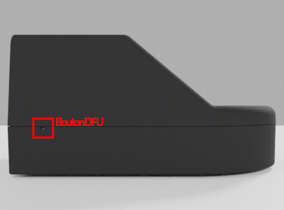
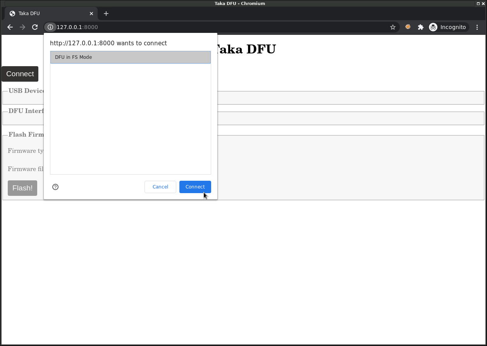
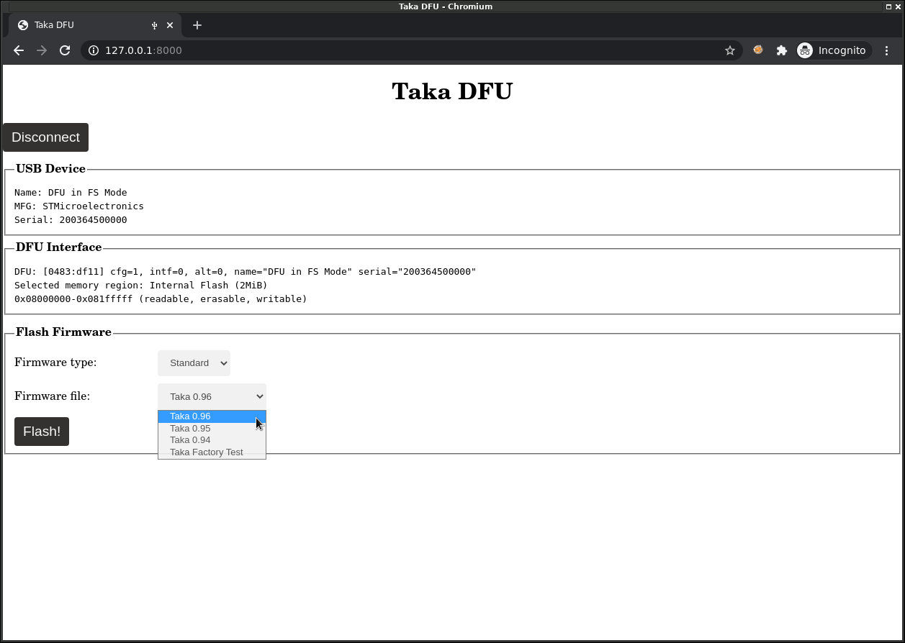

Mise à jour¶
Mode DFU¶
Le lecteur Taka peut être mis à jour via USB. Prérequis:
Etape 1: Connecter Taka à un PC à l’aide d’un câble USB.
Etape 2: Démarrer Taka en mode DFU (Device Firmware Update).
Pour cela, il faut maintenir le bouton DFU enfoncé à l’aide d’une aiguille ou autre objet pointu, tout en démarrant Taka en actionnant l’interrupteur On/Off.
Le bouton DFU est situé sur le coté gauche du boitier:
WebDFU¶
Une application web est fournie, utilisable depuis un navigateur Web (Chrome).
Installation¶
Voir le README https://github.com/lambdaconcept/taka/tree/master/utils/takadfu
(Linux) Install Udev rules
==========================
Write the rule in:
/etc/udev/rules.d/45-stdfu-permissions.rules
--------------------------------------------
ACTION=="add", SUBSYSTEM=="usb", ATTRS{idVendor}=="0483", ATTRS{idProduct}=="df11", MODE="0664", GROUP="plugdev"
--------------------------------------------
Reload the rules:
# udevadm control --reload-rules && udevadm trigger
(Windows) Install WinUSB driver
===============================
https://zadig.akeo.ie/
Assign "WinUSB" driver to the device.
Run the HTTP server for testing
===============================
$ python3 -m http.server
In a Web browser (Chrome), connect to:
http://127.0.0.1:8000/
Connection¶
{kind=link}
Si le périphérique USB DFU n’apparait pas dans la liste, vérifiez que Taka est bien démarré en Mode DFU.
Selection du firmware¶
Les firmwares précompilés sont déja inclus dans l’application web, il suffit de sélectionner la version voulue dans la liste déroulante et de cliquer sur le bouton “Flash!”.
{kind=link}

La mise à jour est terminée.
DFU-Util¶
Note
Sous linux, il est aussi possible d’utiliser dfu-util pour faire la mise à jour en ligne de commande plutôt que par l’application web
apt-get install dfu-util
dfu-util -d 0483:df11 -a 0 -D taka.bin --dfuse-address 0x08000000